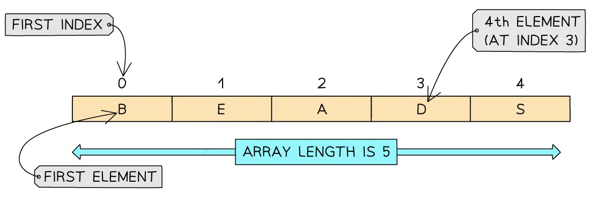

Array Basics
Arrays
What is an array?
- An array is an ordered, static set of elements
- Can only store 1 data type
- The position of each element in an array is identified using the array’s index
- The array’s first element is the lower bound (LB)
- The array’s last element is the upper bound (UB)
- The lower bound of an array is typically 0 or 1 depending on the language being used
- An array can be one-dimensional or multi-dimensional
One-dimensional (1D) arrays
-
A 1D array is a linear array

-
To declare a 1D array in pseudocode you must include the lower bound, upper bound and data types:
DECLARE <identifier> : ARRAY[LB:UB] OF <data type>
- In this example a 1D array of five elements each containing single character can be declared as:
DECLARE Letters : ARRAY[0:4] OF CHAR
- An example complete program could be:
// Declare the array
DECLARE Letters : ARRAY[0:4] OF CHAR
// Assign values to each index
Letters[0] ← 'B'
Letters[1] ← 'E'
Letters[2] ← 'A'
Letters[3] ← 'D'
Letters[4] ← 'S'
// Output the full array
FOR Index ← 0 TO 4
OUTPUT Letters[Index]
NEXT Index
- The array is declared with indices from
0 to 4
- Each element stores a single character using the
CHAR data type
- The loop outputs each letter in order
Two-dimensional (2D) arrays
DECLARE <identifier> : ARRAY[LBR:UBR, LBC:UBC] OF <data type>
- In this example a 2D array can be declared as:
DECLARE Letters : ARRAY[0:2, 0:4] OF CHAR
- An example complete program could be:
DECLARE Letters : ARRAY[0:2, 0:4] OF CHAR
// Row 0
Grid[0,0] ← 'B'
Grid[0,1] ← 'E'
Grid[0,2] ← 'A'
Grid[0,3] ← 'D'
Grid[0,4] ← 'S'
// Row 1
Grid[1,0] ← 'S'
Grid[1,1] ← 'E'
Grid[1,2] ← 'V'
Grid[1,3] ← 'E'
Grid[1,4] ← 'N'
// Row 2
Grid[2,0] ← 'W'
Grid[2,1] ← 'H'
Grid[2,2] ← 'I'
Grid[2,3] ← 'T'
Grid[2,4] ← 'E'
ARRAY[0:2, 0:4] creates 3 rows and 5 columns- First index is the row, second is the column:
Letters[row, column]
-
All elements are of type CHAR
A program reads data from a file and searches for specific data.
The main program needs to read 25 integer data items from the text file Data.txt into a local 1D array, DataArray
Write program code to declare the local array DataArray [1]
Answer
-
1D array with name DataArray (with 25 elements of type Integer) [1 mark]
Java
public static Integer[] DataArray = new Integer[25];
VB.NET
Dim DataArray(24) As Integer
Python
DataArray = [] #25 elements Integer
Array Pseudocode
Searching arrays
- A linear search starts with the first value in a dataset and checks every value one at a time until all values have been checked
- A linear search can be performed even if the values are not in order
| Step |
Instruction |
| 1 |
Check the first value |
| 2 |
IF it is the value you are looking for
- STOP! |
| 3 |
ELSE move to the next value and check |
| 4 |
REPEAT UNTIL you have checked all values and not found the value you are looking for |
- A linear search can be used to find elements in an array
- Each element in the array is checked in order, from the lower bound to the upper bound, until the item is found or the upper bound is reached
- An example pseudocode algorithm to perform a linear search on a 1D array could be:
DECLARE List : ARRAY[0:4] OF INTEGER
DECLARE Target : INTEGER
DECLARE Found : BOOLEAN
DECLARE Index : INTEGER
// Initialise array values
List[0] ← 12
List[1] ← 25
List[2] ← 37
List[3] ← 42
List[4] ← 56
// Input the value to search for
OUTPUT "Enter the value to search for:"
INPUT Target
Found ← FALSE
Index ← 0
WHILE Index <= 4 AND Found = FALSE DO
IF List[Index] = Target THEN
Found ← TRUE
ELSE
Index ← Index + 1
ENDIF
ENDWHILE
IF Found = TRUE THEN
OUTPUT "Item found at index ", Index
ELSE
OUTPUT "Item not found"
ENDIF
- Works on a fixed-size array
List[0:4]
- Uses a
WHILE loop for flexibility (early exit if found)
- Clearly separates input, processing, and output
Identifier table
| Identifier |
Data type |
Description |
List |
ARRAY[1:5] OF INTEGER |
Stores the list of numbers to search through |
Target |
INTEGER |
The number the user wants to search for |
Found |
BOOLEAN |
Tracks whether the target value has been found |
Index |
INTEGER |
The current position being checked in the array |
Sorting arrays
What is a bubble sort?
- A bubble sort is a simple sorting algorithm that starts at the beginning of a dataset and checks values in ‘pairs’ and swaps them if they are not in the correct order
- One full run of comparisons from beginning to end is called a ’ pass ‘, a bubble sort may require multiple ’ passes ’ to sort the dataset
- The algorithm is finished when there are no more swaps to make
| Step |
Instruction |
| 1 |
Compare the first two values in the dataset |
| 2 |
IF they are in the wrong order…
- Swap them |
| 3 |
Compare the next two values |
| 4 |
REPEAT step 2 & 3 until you reach the end of the dataset (pass 1) |
| 5 |
IF you have made any swaps…
• REPEAT from the start (pass 2,3,4…) |
| 6 |
ELSE you have not made any swaps…
• STOP! the list is in the correct order |
Example
- Perform a bubble sort on the following dataset
Step 1 - Compare the first two values in the dataset
Step 2 - IF they are in the wrong order, Swap them.
Step 3 - Compare the next two values
Step 4 - Repeat step 2 & 3 until you reach the end of the dataset
5 & 4 Swap!
5 & 1 Swap!
5 & 6 NOT Swap!
6 & 3 Swap!
End of pass 1
Step 5 - IF you have made any swaps…
End of pass 2 (swaps made)
End of pass 3 (swaps made)
End of pass 4 (no swaps)
Step 6 - ELSE you have not made any swaps…
- STOP! the list is in the correct order
Code example
- A bubble sort can be used to put elements in an array in order
- A pseudocode algorithm for a bubble sort on a 1D array could be:
DECLARE Numbers : ARRAY[1:5] OF INTEGER
DECLARE Temp : INTEGER
DECLARE Pass : INTEGER
DECLARE Index : INTEGER
DECLARE Swapped : BOOLEAN
// Initialise the array
Numbers[1] ← 2
Numbers[2] ← 4
Numbers[3] ← 1
Numbers[4] ← 6
Numbers[5] ← 3
// Bubble sort algorithm
REPEAT
Swapped ← FALSE
FOR Index ← 1 TO 4
IF Numbers[Index] > Numbers[Index + 1] THEN
Temp ← Numbers[Index]
Numbers[Index] ← Numbers[Index + 1]
Numbers[Index + 1] ← Temp
Swapped ← TRUE
ENDIF
NEXT Index
UNTIL Swapped = FALSE
// Output the sorted array
FOR Index ← 1 TO 5
OUTPUT Numbers[Index]
NEXT Index
- Uses a fixed array of size 6
- Includes an optimisation to exit early if no swaps were made on a pass
Identifier table
| Identifier |
Data type |
Description |
Numbers |
ARRAY[0:5] OF INTEGER |
Stores the list of numbers to be sorted |
Temp |
INTEGER |
Temporary variable used for swapping two elements in the array |
Pass |
INTEGER |
Tracks the number of passes through the array |
Index |
INTEGER |
Tracks the current position being compared in the array |
Swapped |
BOOLEAN |
Indicates whether a swap occurred during a pass (used to optimise sorting) |
Purpose of files
What is file handling?
- File handling is the use of programming techniques to work with information stored in text files
- Examples of file handing techniques are:
- opening text files
- reading text files
- writing text files
- closing text files
| Concept |
CIE A Level Pseudocode |
| Open file for reading |
OPENFILE fruit.txt FOR READ |
| Open file for writing |
OPENFILE Shopping.txt FOR WRITE |
| Close file |
CLOSEFILE fruit.txt |
| Read line |
READFILE fruit.txt, line |
| Write line |
WRITE fruit.txt, "Oranges" |
| Check end of file |
IF NOT EOF(fruit.txt) THEN |
| Create new file |
OPENFILE Shopping.txt FOR WRITE (same as writing – it overwrites or creates) |
| Append to file |
OPENFILE Shopping.txt FOR APPEND |
- An example program written in pseudocode to:
- Opens a text file for reading
- Reads each line (a fruit name)
- Counts how many fruits are in the file
- Outputs the total
- Closes the file
DECLARE FruitName : STRING
DECLARE FruitCount : INTEGER
FruitCount ← 0
OPENFILE FruitFile FOR READ
WHILE NOT EOF(FruitFile) DO
READFILE FruitFile, FruitName
FruitCount ← FruitCount + 1
ENDWHILE
CLOSEFILE FruitFile
OUTPUT "Total number of fruits: ", FruitCount
Identifier table
| Identifier |
Data type |
Description |
FruitName |
STRING |
Stores the name of each fruit read from the file |
FruitCount |
INTEGER |
Keeps track of how many fruits have been read |
FruitFile |
FILE |
The file containing the fruit names (e.g. “fruit.txt”) |
A program is required to read the contents of a text file Data.txt into a 1D array DataArray. The file contains 25 integer values, one per line. [4]
Write pseudocode to:
DECLARE DataArray : ARRAY[1:25] OF STRING
DECLARE Counter : INTEGER
DECLARE LineData : STRING
Counter ← 1
OPENFILE "Data.txt" FOR READ
WHILE NOT EOF("Data.txt") DO
READFILE "Data.txt", LineData
DataArray[Counter] ← LineData
Counter ← Counter + 1
ENDWHILE
CLOSEFILE "Data.txt"